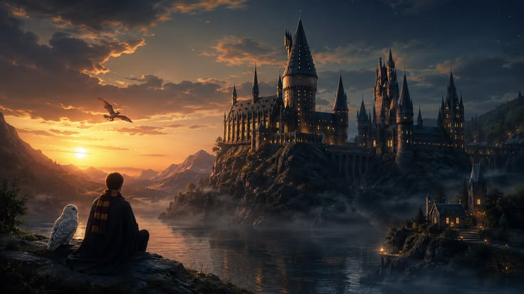

A franquia cinematográfica Harry Potter, um enorme sucesso de cultura pop criado pela autora J.K. Rowling, é composta por 8 filmes principais lançados pela Warner Bros. entre 2001 e 2011, que arrecadaram bilhões de dólares ao adaptar os sete livros originais sob o comando de quatro diretores diferentes: Chris Columbus, Alfonso Cuarón, Mike Newell e David Yates. A narrativa acompanha a jornada de amadurecimento do jovem bruxo Harry Potter (Daniel Radcliffe) e seus amigos Rony Weasley (Rupert Grint) e Hermione Granger (Emma Watson) na Escola de Hogwarts, culminando na Segunda Guerra Bruxa contra o terrível Lorde Voldemort.